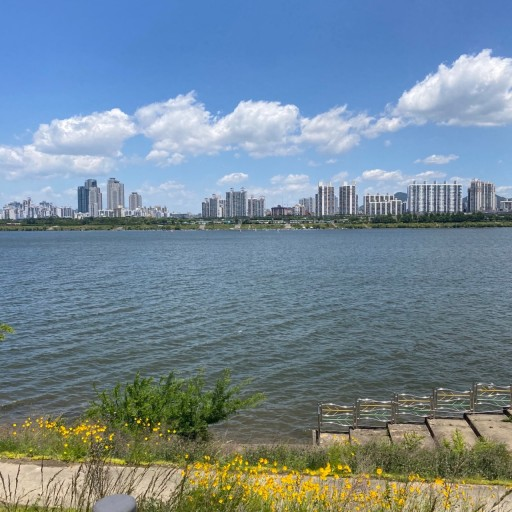
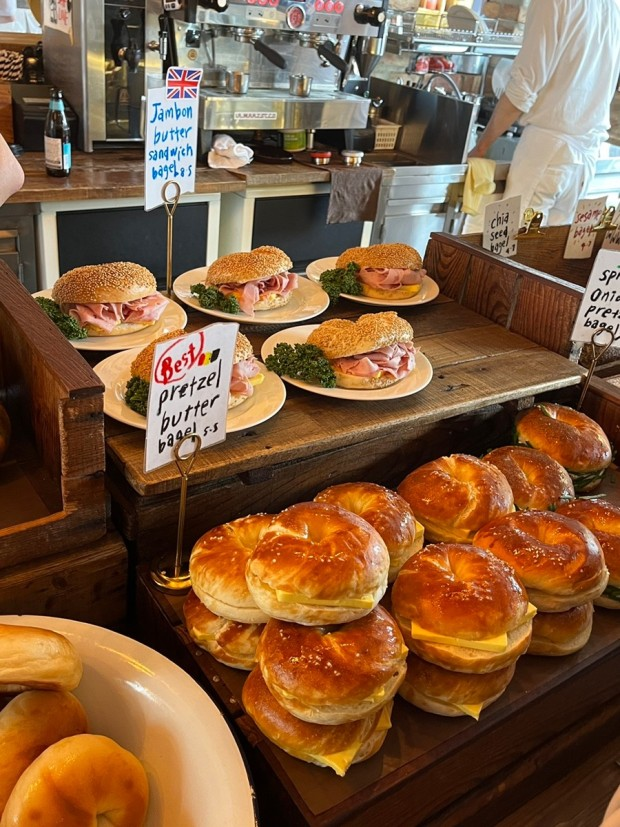
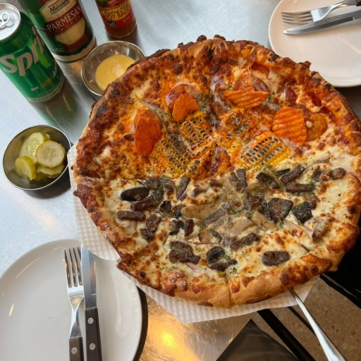
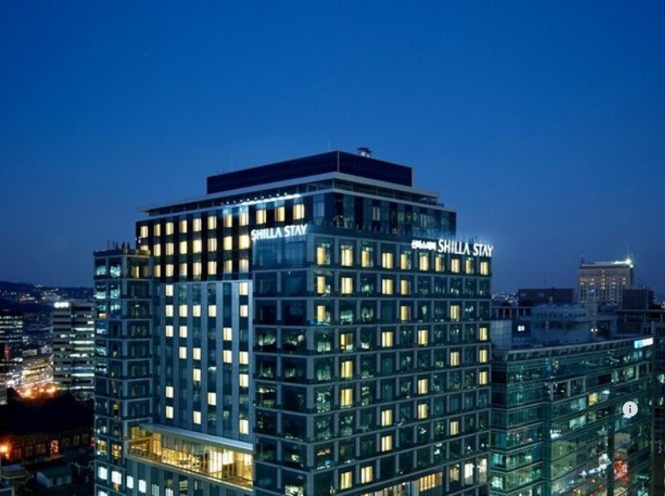

홍제천 인공폭포는 처음 보는 이라면 자연폭포로 여길 정도로
산자락과 잘 어울리는 폭포입니다. 높이 25m, 폭 60m 에 달하며
도심 속에서 시원한 물소리와 자연 풍경을 제대로 감상할 수 있다.
그리고 폭포 건너편에 수변테라스 카페가 생겨
시민들의 일상 속 휴식공간도 마련되어 있습니다.

뚝섬 한강공원
(서울시 광진구 자양동 427-6)
뚝섬 한강공원은 한강공원이 조성되기 이전부터 강변 유원지로 유명했던 곳 입니다.
수상에서는 시원한 바람을 맞으며 낭만과 젊음을 만끽할 수 있는 윈드서핑, 수상스키,
모터보트 등 수상스포츠가 활발하게 이루어지며 조화를 이루는 곳입니다.
서울의 맛집

런던 베이글 뮤지엄
(서울 종로구 북촌로4길 20 연화빌딩 1층)
런던 베이글 뮤지엄은 국내 어디에서도 맛볼 수 없었던
베이글의 식감과 무드를 중점으로 두고 있습니다.
메뉴는 감자치즈 베이글, 소금빵 베이글, 어니언 베이글,
브릭레인 베이글 등이 있습니다.

노모어 피자
(서울특별시 성동구 서울숲2길 26 1층)
노모어 피자는 특허 받은 소금 우유 도우를 사용하여
타사 대비 촉촉하고 바삭한 도우를 즐길 수
있습니다. 메뉴는 옥수수 새우피자, 베이컨 하와이안
피자, 스윗 고구마 피자 등이 있습니다.
서울의 숙소

신라스테이 광화문
(서울특별시 종로구 삼봉로 71)
호텔신라가 선보이는 비즈니스 호텔로 호텔신라의
가치 위에 고객이 원하는 서비스와 상품만을 엄선하여
제공합니다. 룸 타입은 스탠다드, 디럭스, 프리미어 디럭스, 그랜드로
총 4개의 룸이 있습니다. 주차장은 지하 2층에서 지하 4층까지 있습니다.
인근에는 1호선 종각역이 있으며 빌딩 8층부터가 신라스테이 시설이고
7층에서 지하 1층까지는 업무 및 상업시설이 입주해있습니다.
글래드 강남 코엑스센터
(서울특별시 강남구 테헤란로 610)
글래드 강남 코엑스센터는 스마트한 여행자들을 위한
글로벌 호텔 브랜드 GLAD가 선보이는 4번째 호텔입니다.
282개의 객실을 갖춘 글래드 강남 코엑스센터는 스마트한
여행자들을 위한 호텔로 기존의 비즈니스 호텔이 지닌 무난하고
건조한 분위기를 탈피할 수 있도록, 디자인과 서비스에 글래드 강남
코엑스센터 특유의 친근함을 담았습니다. COEX 인근에 위치하여
비지니스 고객 및 주말 나들이 고객이 머무르기 좋은 최적의
장소로 각광받고 있으며, 합리적인 가격으로
삼성역의 핫플레이스로 떠오른 ‘뷔페G’, 품격 있는 코스 요리를
즐길 수 있는 유러피언 레스토랑 ‘레스토랑G’, 이탈리아 대표 커피
브랜드 ‘세가프레도’를 운영하고 있습니다.